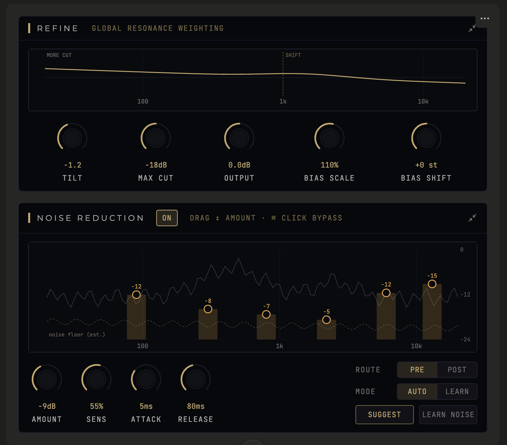
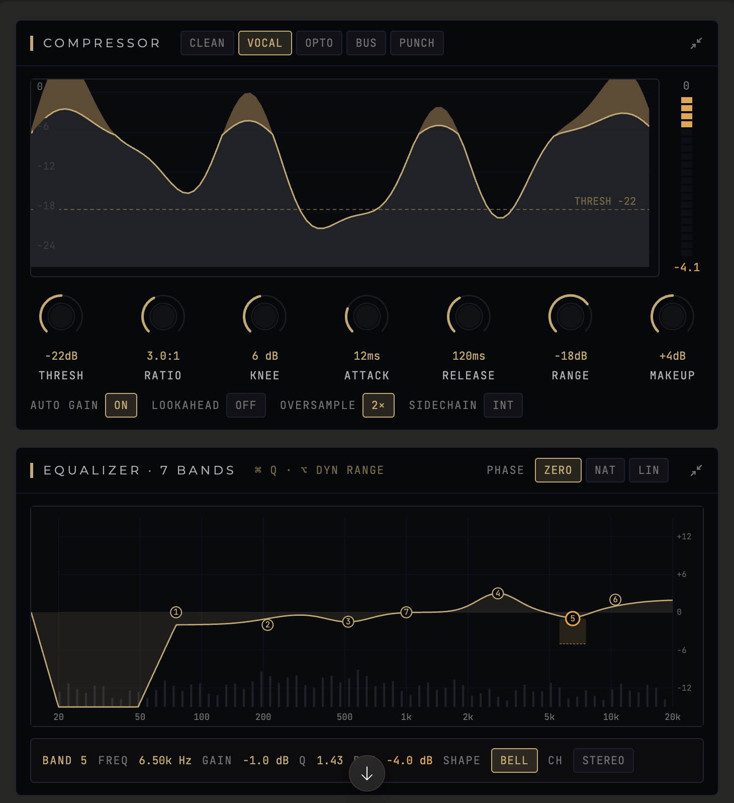

Noise, resonance, EQ and compression for the spoken voice — in a single, mono-first pass. ROGERIAN finds what's wrong only when it's wrong, and leaves the performance alone. It collapses complex cleanup chains into a transparent signal path that reflects the voice back, cleaner, without imposing an unwanted signature character of its own.
Chassis currently undergoing system bench testing. Register your identity below to receive prompt transmission alerts when parameters stabilize.
NOTIFY_ME_AT_LAUNCHTHE_OVERVIEW
ROGERIAN is a dialogue-first channel strip — four cleanup and shaping stages in one mono-centric processor, tuned end to end for the human voice: Noise reduction → Resonance suppression → EQ → Compression. It replaces the stack of separate plugins editors reach for on every line of dialogue — a denoiser, a dynamic resonance tool, a corrective EQ, a leveler — with one focused instrument.
Named for person-centred (Rogerian) therapy — non-judgmental, reflective, calming — because that's how it treats a signal. It reflects the voice back, cleaner, without imposing a character of its own.
THE_PROBLEM_IT_SOLVES
Spoken-word audio rarely has one problem. A single take can carry hiss and room tone, a ringing resonance from a room mode or proximity, a tonal imbalance, and uneven level — all at once. Cleaning it usually means chaining four or five plugins, each with its own window, its own latency, and its own learning curve, then fighting the interactions between them.
ROGERIAN collapses that chain into one signal path designed specifically for voice: mono by default, low-latency by default, and transparent until you ask it to work.
THE_FOUR_STAGES

A real spectral denoiser — not a meter. Pulls down hiss, room tone and hum across a multiband floor, with automatic noise profiling and a one-click Suggest to set it for you. Runs zero-latency by default (safe for picture sync and tracking), with a higher-resolution spectral tier for offline detail work. Routable before or after the resonance stage.
Dynamic, cut-only spectral processing that detects resonant peaks and reduces them only when they're present — the steady ring, the harsh consonant, the boxy room mode — while leaving everything else untouched. You shape where it works with five movable bands (drag to set frequency and amount, adjust width, bypass per band).
- · Soft / Hard — adaptive tracking, or a fixed threshold for stubborn resonances.
- · Focus — persistence targeting: act on the sustained ring, spare the transient word.
- · Density — follow a resonance up through its harmonics.
- · Detail — how surgical or broad the detection is.
- · REFINE — global Bias, Tilt and Max Cut to sculpt the whole reduction map at once.
- · Delta — solo exactly what's being removed, so you always hear what you're doing.

Corrective Equalization Chain: A 7-band parametric EQ with an interactive curve and live spectrum, per-band dynamic behavior, and selectable phase modes (zero / natural / linear) — corrective when you need precision, musical when you need shape.
Dynamics Compression Chain: Voice-first leveling with a soft knee, an animated gain-reduction display, and program-dependent styles (Clean, Vocal, Opto, Bus, Punch) — to even out delivery without pumping or squashing the life out of a performance.
DIFFERENTIAL_ANALYSIS
- Full Voice Pass Complete multi-stage calibration voiced for dialogue rather than generic multi-effect layouts.
- Dual Reconstruction Zero-latency tracking maps perfectly alongside clinical linear-phase offline rendering modes.
- Persistence Weighting Focus targets lock onto sustained resonances while automatically passing transient words.
- Phase-Coherent Denoise Direct baseline reduction layers scrub signals without introducing tracking latency.
TECHNICAL_SPECIFICATIONS
- Type Matrix Dialogue channel-strip suite (noise · resonance · EQ · compression)
- Channel Configuration Mono (Default chassis orientation) · Stereo · Mid/Side tracking
- Quality Tiers Scalable operational boundaries (Eco · Standard · HQ resolution tiers)
- Formats VST3 · AU · Standalone [Native Apple Silicon & Intel Mac Binary Deployment]